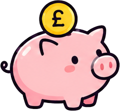

Make a plan
Give your next holiday, special gift or rainy-day fund a home. Choose a target or save at your own pace.
From holidays and gifts to rainy-day funds, give your savings a purpose. Make a plan, watch it grow and enjoy every little victory along the way.
Give your next holiday, special gift or rainy-day fund a home. Choose a target or save at your own pace.
Record savings, withdrawals and spending. See your progress and explore when you might reach your goal.
Enjoy cheerful illustrations and milestone celebrations as your big plans get a little closer.
Set optional monthly reminders for a friendly nudge to keep saving.

My Big Plans is a tracker, not a bank account. It never holds, transfers or accesses your actual money. Keep saving wherever you normally do, and record your progress here.
No separate account needed. Your plans work offline and can sync through your personal iCloud account.
Read our privacy policy